In the first example, I had you drag a WriteLine activity directly on the workflow designer. While it is true that any activity seen in the Visual Studio 2010 Toolbox can be the first item placed on the designer, only a few of them are able to contain sub-activities (which is obviously very important!). When you are building a new workflow, the chances are very good that the first item you will place on your designer will be a Flowchart or Sequence activity.
Both of these built in activities have the ability to contain any number of internal child activities (including additional Flowchart or Sequence activities) to represent the entirety of your business process. To begin, let’s create a brand new Workflow Console Application named EnumerateMachineDataWF. Once you have done so, rename your initial *.xaml file to MachineInfoWF.xaml.
Now, under the Flowchart section of your Toolbox, drag a Flowchart activity onto the designer. Next, using the Properties window, change the DisplayName property to something a tad more catchy, such as Show Machine Data Flowchart (as I am sure you can guess, the DisplayName property controls how the item is named on the designer). At this point, your workflow designer should look something like Figure 26-7.
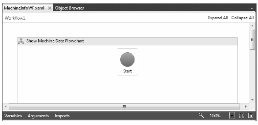Figure 26-7 The initial Flowchart activity
Be aware that there is a grab-handle on the lower right of the Flowchart activity, which can be used to increase or decrease the size of the flowchart designer space. You’ll need to increase the size as you add more and more activities.
The large Start icon represents the entry point to the Flowchart activity, which in this example is the first activity in our entire workflow and will be triggered when you execute the workflow using the WorkflowInvoker or WorkflowApplication classes. This icon can be positioned anywhere on your designer, and I’d suggest you move it to the upper left, just to make some more space.
Your goal is to assembly your flowchart by connecting any number of additional activities together, typically making use of the FlowDecision activity during the process. To start, drag a WriteLine activity on the designer, changing the DisplayName to Greet User. Now, if you hover your mouse over the Start icon, you will see one docking tab on each side. Click and hold the docking tab closest to the WriteLine activity, and drag it to the docking tab of the WriteLine activity. Once you have done so, you should see a connection between these first two items, signifying that the first activity which will be executed in your workflow will be Greet User.
Now, similar to the first example, add a workflow argument (via the Arguments button) named UserName of type string with no default value. This will be passed in dynamically via the custom Dictionary<> object in just a bit. Finally, set the Text property of the WriteLine activity to the following code statement:
"Hello" & UserName
Now, does anything strike you as odd here? If you were authoring C# code, you would encounter an error beacuse the string concatenation symbol is +, not &! However (and this is the weird part), whenever you are entering a code condition in a workflow, you must use the syntax of Visual Basic! This is because the WF 4.0 API is making use of a helper assembly which has been coded to process VB statements rather than C# statements (strange but true).
Add a second WriteLine activity to your designer, which is connected to the previous. This time, define a hard coded string value of "Do you want me to list all machine drives?" for the Text property, and change the DisplayName property to Ask User. Figure 26-8 shows the connections between current workflow activities.
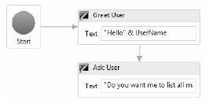Figure 26-8 Flowchart workflows connect activities together
Because the majority of a workflow is defined in a declarative manner using XAML, you are sure to make good use of the InvokeMethod activity, which allows you to invoke methods of real objects at various points in your workflow. Drag one of these items to your designer, change the DisplayName property to Get Y or N, and make a connection between it and the Ask User WriteLine activity.
The first property to configure for an InvokeMethod activity is the TargetType property, which represents the name of the class that defines a static member you wish to invoke. Using the dropdown list box for the TargetType of the InvokeMethod activity, pick the Browse for Types... option (Figure 26-9).
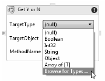Figure 26-9 Specifying a target for InvokeMethod
From the resulting dialog box, pick the System.Console class of mscorlib.dll (if you enter the name of the type within the Type Name edit area, the dialog will automatically find the type). Once you have found the System.Console class, click the OK button.
Now, using the InvokeMethod activity on the designer, enter ReadLine as the value for the MethodName property. This will configure your InvokeMethod activity to invoke the Console.ReadLine() method when this step of the workflow is reached.
As you know, Console.ReadLine() will return a string value that contains the keystrokes entered on the keyboard before the Enter key is pressed; however, you need to have a way to capture the return value! You will do this next.
Defining a workflow variable in XAML is almost identical to defining an argument, in that you can do so directly on the designer (this time with the Variables button). The difference is that arguments are used to capture data passed in by the host, whereas variables are simply points of data in the workflow which will be used to influence its runtime behavior.
Using the Variables aspect of the designer, add a new string variable named YesOrNo. Notice that if you have multiple parent containers in your workflow (for example, a Flowchart containing another Sequence), you can pick the scope of the variable. Here, your only choice is the root Flowchart. Next, select the InvokeMethod activity on the designer, and using the Properties window of Visual Studio 2010, set the Result property to your new variable (Figure 26-10).
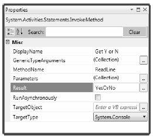Figure 26-10 The fully configured InvokeMethod
Now that you can grab a piece of data from an external method call, you can use it to make a runtime decision in your flow chart using the FlowDecision activity.
A FlowDecision activity is used to take two possible courses of action, based on the truth or falsity of a Boolean variable, or a statement which resolves to a Boolean value. Drag one of these activities onto your designer, and connect it to the InvokeMethod activity (Figure 26-11).
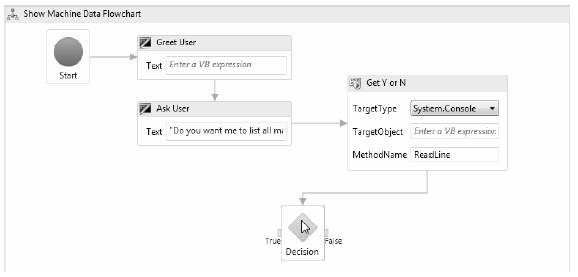Figure 26-11 A FlowDecision can branch two directions
NoteIf you need to respond to multiple branching conditions within a flowchart, make use of the FlowSwitch<T> activity. This allows you to define any number of paths, which will be entered based on the value of a defined workflow variable.
Set the Condition property (using the Properties window) of your FlowDecision activity to the following code statement, which you can type directly into the editor:
YesOrNo.ToUpper() = "Y"
Here you are testing an upper case version of your YesOrNo variable against the value “Y”. Remember, you are entering VB code here, so you don’t want to use the C# equality operator (==), but the VB equality operator (=).
You now need to build the activities which will occur on each side of the FlowDecision activity. On the “false” side, connect a final WriteLine activity which prints out a hard coded message of your choosing, followed by a TerminateWorkflow activity (Figure 26-12).
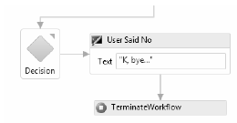Figure 26-12 The "false" branch
Strictly speaking, you don’t need to use the TerminateWorkflow activity, as this workflow would simply end once you reach the end of the false branch. However, by using this activity type, you can throw back an exception to the workflow host, informing them exactly why you are stopping. This exception can be configured in the Properties window.
Assuming you have selected the TerminateWorkflow activity on the designer, use the Properties window, and click on the ellipse button for the Exception property. This will open up an editor which allows you to throw back an exception, just like if you were doing so in code (VB code that is; see Figure 26-13).
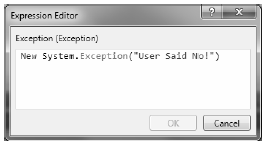Figure 26-13 Configuring an exception to throw when the TerminateWorkflow activity is encountered
Complete the configuration of this activity by setting the Reason property to “YesOrNo was false”.
To begin building the “true” condition of the FlowDecision, connect a WriteLine activity, which simply displays a hard coded string confirming the user has agreed to proceed. From here, connect to a new InvokeMethod activity, which will call the GetLogicalDrives() method of the System.Environment class. To do so, set the TargetType property to System.Environment and the MethodName property to GetLogicalDrives.
Next, add a new workflow level variable (using the Variables button of the workflow designer) named DriveNames of type string[]. To specify you want an array of strings, pick Array of [T] from the Variable Type drop down list, and pick string from the resulting dialog box. Figure 26-14 shows the first part of the “true” condition.
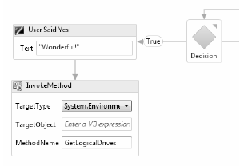Figure 26-14 Configuring an exception to throw when the TerminateWorkflow activity is encountered
Now, set the Result property of this new InvokeMethod activity to your DriveNames variable.
The next part of your workflow will be to print out the names of each drive to the console window, which is to say you need to loop over the data exposed by the DriveNames variable, which has been configured as an array of string objects. The ForEach<T> activity is the WF XAML equivalent of the C# foreach keyword, and it is configured in a very similar manner (at least conceptually).
Drag one of these activities on your designer and connect it to the previous InvokeMethod activity. You will configure the ForEach<T> activity in just a minute, but to complete the true condition branch, place one final WriteLine activity on your designer to close things off. Here is the final top-level look at your workflow (Figure 26-15).
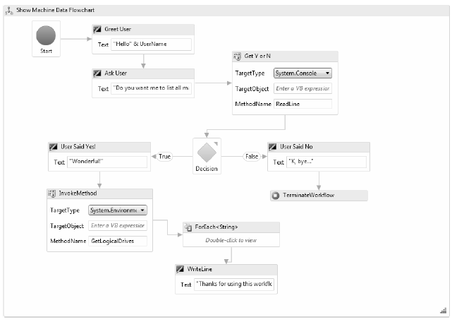Figure 26-15 The completed top-level workflow
To get rid of the current designer error, you need to finish the configuration of the ForEach<T> activity. First, use the Properties window to specify the type parameter to the generic, which in this example will be a string type. The Values property is where the data is coming from, which will be your DriveNames variable (Figure 26-16).
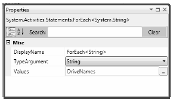Figure 26-16 Setting the type of for-each enumeration
This particular activity needs to be further edited by double clicking on the designer in order to open a brand new mini designer just for this activity. Not all WF 4.0 activities can be double clicked on to yield a new designer, but you can easily tell if this is an option on the activity itself (it will literally say “Double-click to view”). Double click on your ForEach<T> activity, and add a single WriteLine activity, which will print out each string value (Figure 26-17).
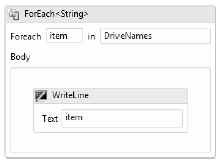Figure 26-17 The final configuration step of the ForEach<T> activity
Note You can add as many activities to the ForEach<T> mini designer as you require. The collective whole of these activities will execute with each iteration of the loop.
Once you have done so, use the links at the upper left of the designer to return to the top level workflow (you’ll use these bread crumbs quite a bit when drilling into a set of activities).
You are just about done with this example! All you need to do is update the Main() method of the Program class to catch the exception that will be raised if the user says “NO” and thereby triggers the Exception object. Update your code as so (and ensure the System.Collections.Generic namespace is imported in your code file):
static void Main(string[] args) { try { Dictionary<string, object> wfArgs = new Dictionary<string, object>(); wfArgs.Add("UserName", "Andrew"); WorkflowInvoker.Invoke(new Workflow1(), wfArgs); } catch (Exception ex) { Console.WriteLine(ex.Message); Console.WriteLine(ex.Data["Reason"]); } }
Notice that the “Reason” for the exception can be obtained using the Data property of System.Exception. So, if you run the program and enter “Y” when asked to enumerate your drives, you’ll see the following type of output:
Hello Andrew Do you want me to list all machine drives? y Wonderful! C:\ D:\ E:\ F:\ G:\ H:\ I:\ Thanks for using this workflow
However, if you enter “N” (or any other value other than “Y” or “y”), you will see the following:
Hello Andrew Do you want me to list all machine drives? n K, bye... YesOrNo was false
Now, if you are new to working with a workflow environment, you might be wondering what you have gained by authoring this very simple business process using WF XAML rather than good-old C# code. After all, you could have avoided Windows Workflow Foundation all together and simply built the following C# class:
class Program { static void Main(string[] args) { try { ExecuteBusinessProcess(); } catch (Exception ex) { Console.WriteLine(ex.Message); Console.WriteLine(ex.Data["Reason"]); } } private static void ExecuteBusinessProcess() { string UserName = "Andrew"; Console.WriteLine("Hello {0}", UserName); Console.WriteLine("Do you want me to list all machine drives?"); string YesOrNo = Console.ReadLine(); if (YesOrNo.ToUpper() == "Y") { Console.WriteLine("Wonderful!"); string[] DriveNames = Environment.GetLogicalDrives(); foreach (string item in DriveNames) { Console.WriteLine(item); } Console.WriteLine("Thanks for using this workflow"); } else { Console.WriteLine("K, Bye..."); Exception ex = new Exception("User Said No!"); ex.Data["Reason"] = "YesOrNo was false"; } } }
The output of the program would be absolutely identical to the previous XAML based workflow. So, why bother tinkering with all these activities in the first place? First of all, remember that not everyone is comfortable reading C# code. Be honest: If you had to explain this business process to a room full of sales people and non-technical managers, would you rather try to explain this C# code or show them the flowchart? I know my answer...
More importantly, remember that the WF API has a whole slew of additional runtime services, including persistence of long running workflows to a database, automatic tracking of workflow events, and so on (alas, I don’t have time to cover them here). When you think of the amount of work you would need to do in order to replicate this functionality in a new project, the utility of WF is even clearer.
Finally, by allowing us a declarative way to generate workflows using designers and XAML, we can offload the construction of a workflow to higher level subject matter experts and managers, while we incorporate the XAML into our C# projects.
All of this being said, the WF API is not necessarily the correct tool of choice for all .NET programs. However, for most traditional business applications, the ability to define, host, execute and monitor workflows in this manner is a very good thing indeed. Like any new technology, you will need to determine if this is useful for your current project. Let’s see another example of working with the WF API, this time by packaging up a workflow in a dedicated *.dll.
Source Code The EnumerateMachineInfoWF project is included under the Chapter 26 subdirectory.